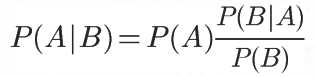
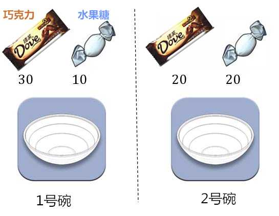
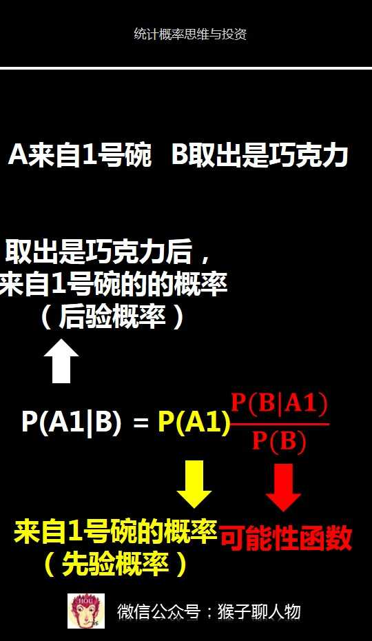
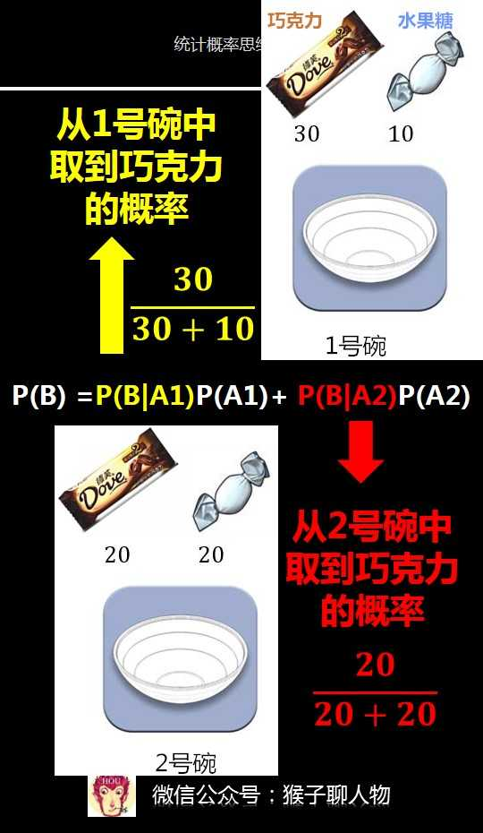
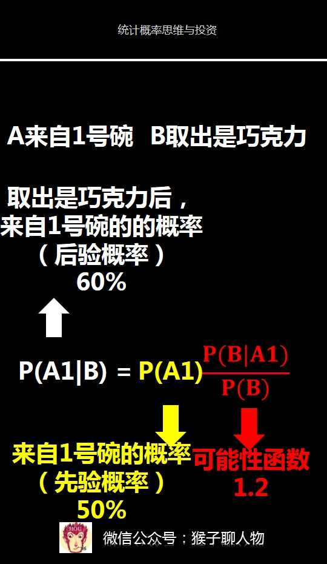

什么是贝叶斯
英国数学家托马斯·贝叶斯在一篇论文中，为了解决一个“逆概率”问题，而提出了贝叶斯定理。
在贝叶斯写这篇文章之前，人们已经能够计算“正向概率”，比如举办了一个抽奖，抽奖桶里有10个球，其中2个白球，8个黑球，抽到白球就算你中奖。你伸手进去随便摸出1颗球，摸出中奖球的概率是多大。（2/10）
而贝叶斯在他的文章中是为了解决一个“逆概率”的问题。比如上面的例子我们并不知道抽奖桶里有什么，而是摸出一个球，通过观察这个球的颜色，来预测这个桶里里白色球和黑色球的比例。

贝叶斯案例
有两个一模一样的碗
1号碗里有：30个巧克力和10个水果糖
2号碗里有：20个巧克力和20个水果糖

然后把碗盖住。随机选择一个碗，从里面摸出了一个巧克力。
问题：这颗巧克力来自1号碗的概率是多少？（即，在随即取一个碗并从中摸出了一个巧克力的情况下，这个碗是1号碗的概率）
第1步，分解问题
1）要求解的问题：取出的巧克力，来自1号碗的概率是多少？
来自1号碗记为事件A1，来自2号碗记为事件A2
取出的是巧克力，记为事件B，
那么要求的问题就是P(A1|B)，即取出的是巧克力，来自1号碗的概率
2）已知信息：
1号碗里有30个巧克力和10个水果糖
2号碗里有20个巧克力和20个水果糖
取出的是巧克力
第2步，应用贝叶斯定理

1）求先验概率
由于两个碗是一样的，所以在得到新信息（取出是巧克力之前），这两个碗被选中的概率相同，因此P(A1)=P(A2)=0.5,(其中A1表示来自1号碗，A2表示来自2号碗)
这个概率就是’先验概率’，即没有做实验之前，来自一号碗、二号碗的概率都是0.5。
2）求可能性函数
P(B|A1)/P(B)
其中，P(B|A1)表示从一号碗中(A1)取出巧克力(B)的概率。
因为1号碗里有30个水果糖和10个巧克力，所以P(B|A1)=30/(30+10)=75%

P(B)=P(B|A1)P(A1)+P(B|A2)P(A2)=0.75*0.5+20/(20+20)*0.5=62.5%
所以，可能性函数P(A1|B)/P(B)=75%/62.5%=1.2
可能性函数>1.表示新信息B对事情A1的可能性增强了。
3）带入贝叶斯公式求后验概率
将上述计算结果，带入贝叶斯定理，即可算出P(A1|B)=60%
这个例子中我们需要关注的是约束条件：抓出的是巧克力。如果没有这个约束条件在，来自一号碗这件事的概率就是50%了，因为巧克力的分布不均把概率从50%提升到60%。
